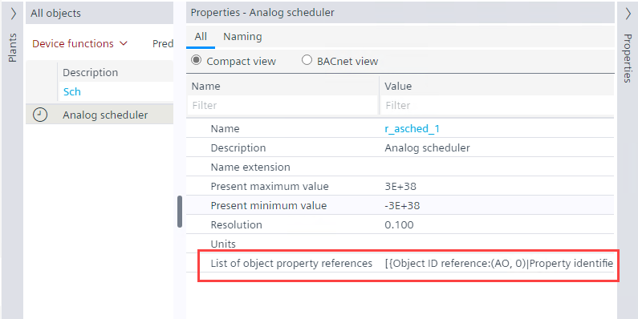
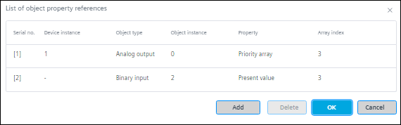
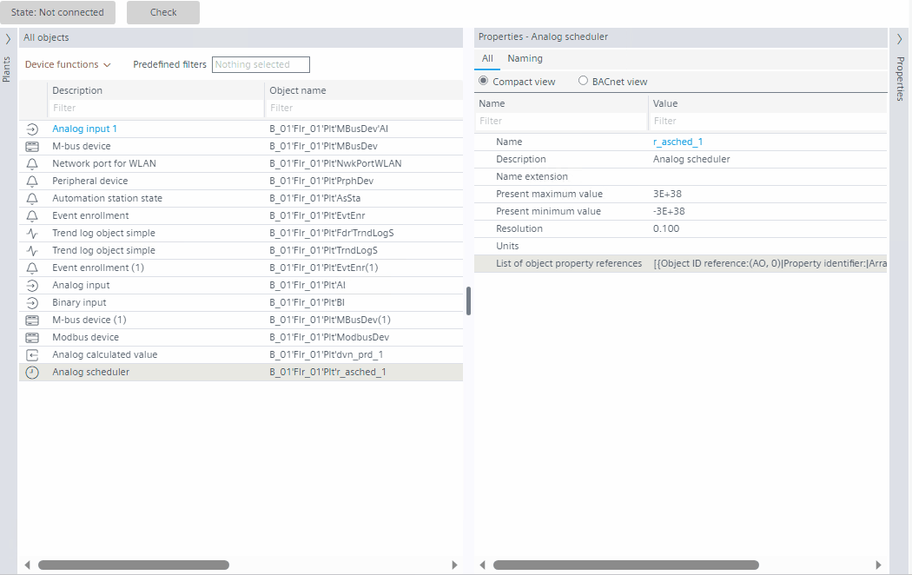

配置调度程序对象中的对象属性引用列表
添加对在 FPE 中创建的调度程序对象的外部引用。这List of object property references财产可在PropertiesABT 站点编辑器中的选项卡。

- Add a scheduler object in the Field Programming Editor (FPE). See Add a scheduler to the Programming editor.
- Go to Building > Building structure.
- Right-click the automation station and select Go to engineering.
- Open the BACnet objects task.
- Select the any scheduler object from the BACnet objects list.
- Open the Properties tab.
- Select the BACnet view tab.
- Click List of object property references property in the Properties tab.
- The List of object property references dialog box opens.

- Click Add.
- Enter the required values in Device instance, Object instance, and Array index fields respectively.
- Select Object type and Property from the drop-down list, or, type the description or number in the Object type and Property. See Hybrid control.
- The results are displayed accordingly, then click the required value.
NOTE: These properties are from the respective device/controller used.
NOTE: Validation of Device instance, Object instance, Object type, and Property is done by the firmware.
NOTE: The Object type should be same as the scheduler type object, else the object will not be available in the online mode. 
- To add more object property references, repeat step 8 and 9.
- Click Ok.
- To delete an existing object property reference, select the property, click Delete, and click Ok.
- You have added object property references to scheduler objects.
Hybrid control
混合控制是一种功能，用户可以通过输入描述或 ID/number. 从下拉列表中选择一个值，这适用于Event enrollment目的 -Floating limit和Command failure事件类型；和Scheduler对象。
看Configuring list of object property references within a scheduler object和Configuring event enrollment objects.
Case 1: Enter the description
以调度程序对象配置为例。

这仅适用于Floating limit和Command failure事件类型；和调度程序引用对象类型。

Case 2: Enter the ID/number
以事件注册配置为例。
这仅适用于Floating limit和Command failure事件类型；和调度程序引用对象类型。